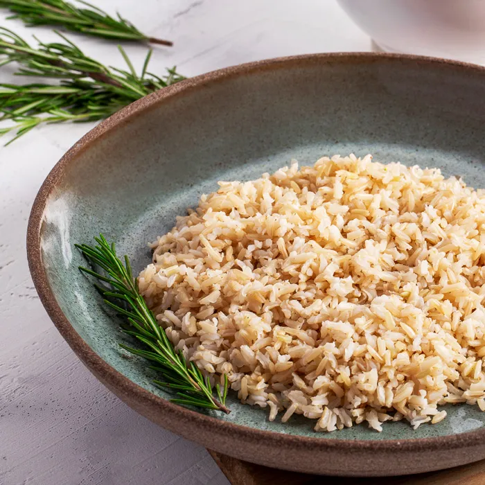
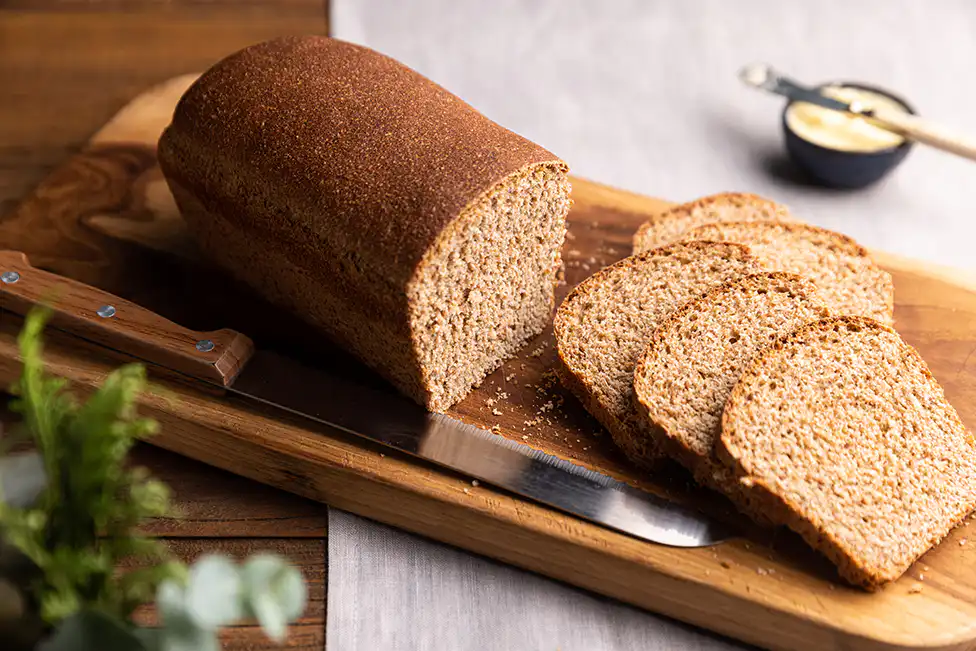
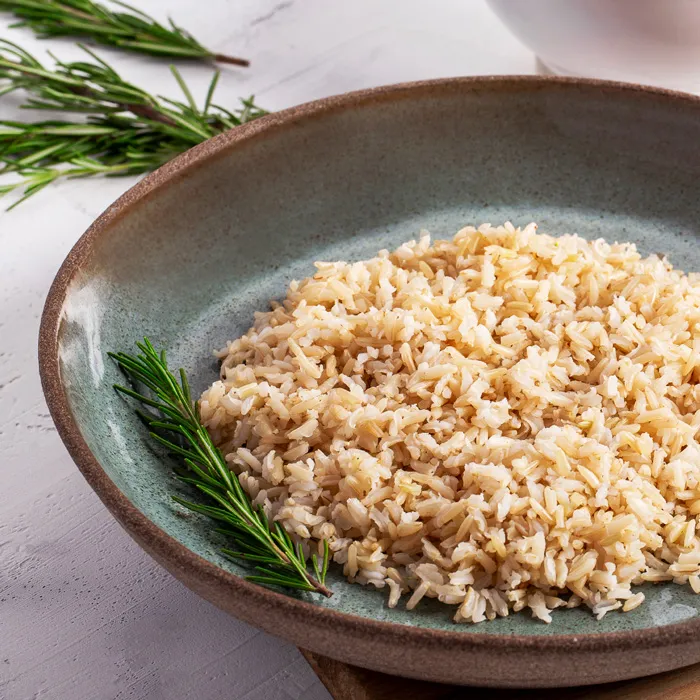
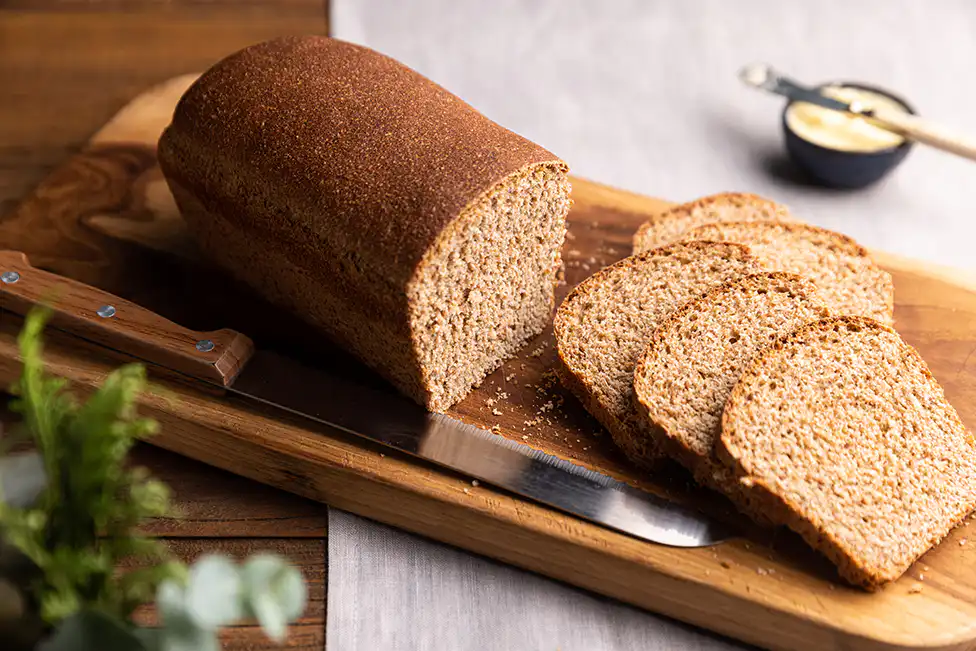

Substituições de Alimentos
Fazer pequenas trocas pode ter um grande impacto na sua dieta:
- Açúcar por Mel: Uma alternativa natural que também traz sabor.
- Arroz Integral em vez de Branco: Mais fibras e nutrientes.
- Pão Integral em vez de Branco: Melhora a saciedade e a digestão.
- Batata Doce em vez de Batata: Mais vitaminas e minerais.
 


